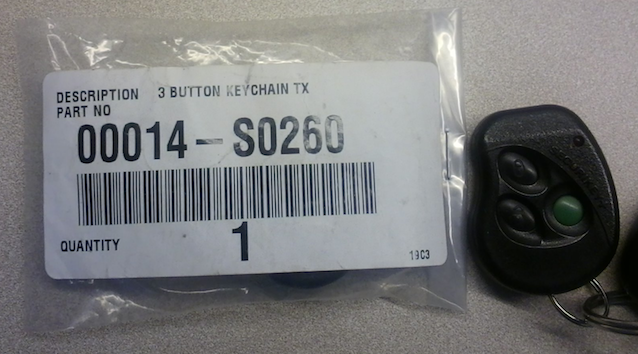
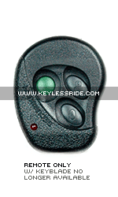
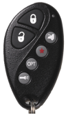

Background | Manual [pdf]
Secuikey+ Manual, Programming and Replacement Information
Background
In 2005, I bought a used 2002 Toyota Tacoma. It came equipped with a SecuriKey+ keyless entry system. Shown in the pictures above, the key fob is a combination key and keyless entry. It's 2012 now and the plastic casing has cracked from ten years of twisting the key in the ingition. I don't have much longer before I snap it in two, so I've started researching a replacement. Finding information has been a challenge, so I'm documenting what I know here. If you have more information on the history, replacement sources or alternatives, email me at jjg@jjguy.com and I'll include it here.
History
It's an aftermarket system, and it's not. Older Toyota models did not support keyless entry from the factory, but the Gulf States dealers routinely installed this particular alarm system at the dealership between (estimated) 1997 and 2002. They are no longer made, the dealerships do not sell replacements and getting any information is difficult.
- Original Manual: ELVAT6B Securikey+ Manual [pdf] (Thanks to Charles W, the rockdoc!)
- Key fob FCC Id:: ELVAT6B
- Key fob Toyota part nmber: Part 00014-S0260
- Transmit frequency: 433 MHz - 434 MHz
- Main control module: Part 00014-S0273 (underneath dash, ~4x4x1" black plastic box).
- Shock sensor: Part 0014-S0274 (mounted on firewall under dash, sensitivity adjustment dial on front)
- Brand: Audiovox?
- Original Manufacturer: Nutek Corporation, Taipei, Taiwan
- FCC application: here. It is primarily of historical significance.
{kind=link}
The exact ELVAT6B fob is no longer manufactured. In addition to the sources below, legacy new stock or used remotes may be available via eBay or Craigslist.
Dealer replacementEddie emailed me to share he found a replacement from his local Toyota dealer in Plano, Tx. Toyota part 000014-S0260, $33 with tax. According to that dealer, the remotes are still available from many dealers. This is the cheapest and most reliable option.

Remote only replacement
KeylessRide.com's lists a replacement remote for $49. I purchased my replacement from here, perfectly satisified.

Code Alarm PROTX6 Audiovox Store (unconfirmed)
A number of places, including Remotes Unlimited, Audiovox themselves, sell the Code Alarm PROTX6 with FCC ID ELVATDB remote as a replacement for the ELEVAT6B. I have not confirmed it's efficacy.
